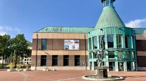
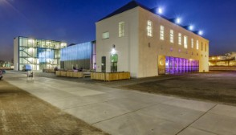
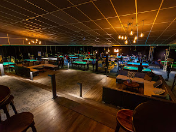
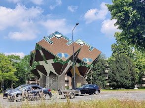
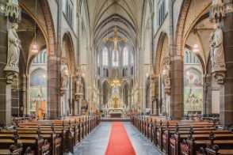
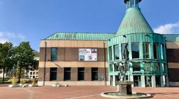
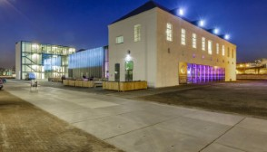
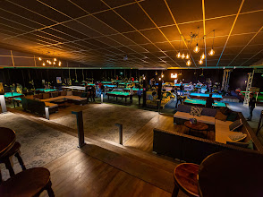
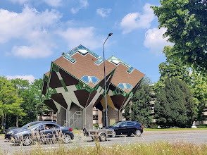
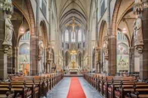

Kunsthal
Cacaofabriek
Home Computer Museum

Edah Museum

Snookertown
Kubuswoningen
Lambertuskerk
Het Speelhuis

Jan Visser Museum


Feit 1: De meest romantische straat in Helmond heet Verliefd Laantje
Feit 2: Jaques Vriens (kinderboeken schrijver) woonde vroeger in Helmond
Feit 3: Waar komt de naam Ketsegangske vandaan?
Feit 4: Waar is nog de functie van de watertoren?
Feit 5: Helmonders hebben een zeer efficiënte manier om zichzelf te uiten
1. De straat is te vinden aan de Aarle-Rixtelseweg
2. Jaques Vriens woonde in hotel st. Lambert
3. Deze naam is vernoemd naar de bakker Jan Kets
4. Het idee achter zo'n toren is dat wanneer water hoger is dan andere gebouwen, de druk op het leidingnetwerk blijft en dus water uit de kraan kan lopen.
5. Zou u dat eens willen herhalen? - Wa?
Kunsthal
Cacaofabriek
Home Computer Museum
Edah Museum
Snookertown
Kubuswoningen
Lambertuskerk
Het Speelhuis
Jan Visser Museum